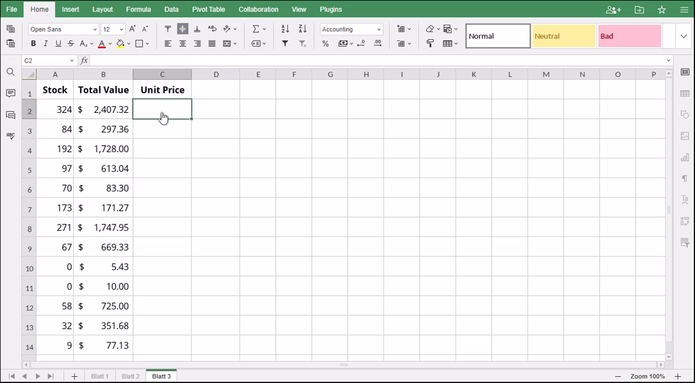

IFERROR Funkcija
Funkcija IFERROR je jedna od logičkih funkcija. Koristi se za proveru da li formula u prvom argumentu sadrži grešku. Funkcija vraća rezultat formule ako nema greške, ili value_if_error ako greška postoji.
Sinaksa
IFERROR(value, value_if_error)
Funkcija IFERROR ima sledeće argumente:
| Argument | Opis |
|---|---|
| value | Vrednost koja se proverava da li sadrži grešku. |
| value_if_error | Vrednost koja se vraća ako formula daje grešku. Sledeće greške se proveravaju: #N/A, #VALUE!, #REF!, #DIV/0!, #NUM!, #NAME?, #NULL!. |
Napomene
Kako primeniti funkciju IFERROR.
Primeri
Imate listu dostupnog stanja artikala i njihove ukupne vrednosti. Da biste izračunali cenu po jedinici, koristićemo funkciju IFERROR da proverimo da li postoje greške. Argumenti su sledeći: value = B2/A2, value_if_error = "Nema na stanju". Formula u prvom argumentu nema grešaka za ćelije C2:C9 i C11:C14, tako da funkcija vraća rezultat izračunavanja. Međutim, za C10 i C11 je situacija suprotna jer formula pokušava deljenje sa nulom, pa dobijamo "Nema na stanju" kao rezultat.
